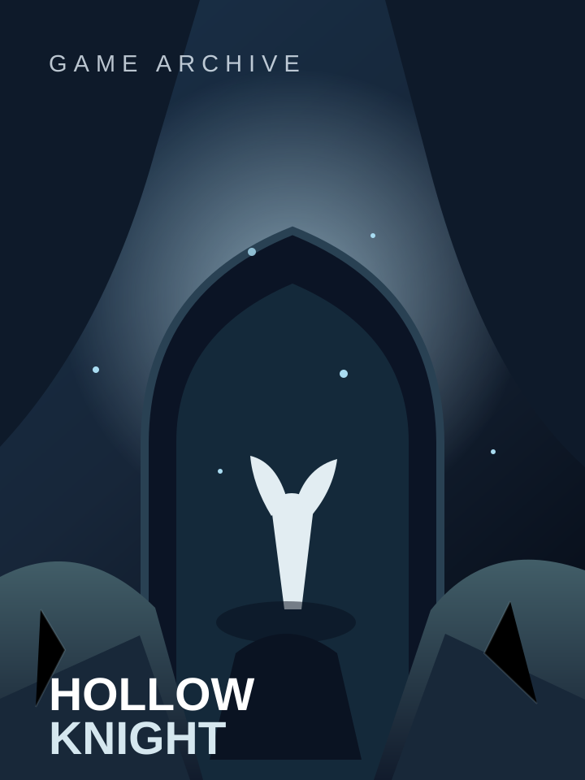

YOUR NEXT GAME STARTS HERE
發現下一場
值得投入的冒險。
從獨立冒險到自由建造，整理遊戲最值得認識的玩法與特色。跳過無止境的列表，從這裡開始探索。
03收錄遊戲
07遊戲分類
100%持續擴充設計

EDITOR'S PICK / 001HOLLOW KNIGHT一段走進未知的探索旅程
THE LIBRARY / 遊戲資料庫
探索遊戲.
依照名稱搜尋，或從不同遊戲類型開始尋找。
ARCHIVE 001—003
依類型篩選正在載入...
正在載入分類...
正在載入遊戲資料...
找不到符合條件的遊戲
試試其他名稱，或切換不同分類。
BUILT TO GROW
一個可以持續
成長的遊戲圖鑑.
Game Archive 是一個獨立的遊戲介紹練習專案，以客觀資料、清楚的遊戲分類與一致的頁面設計為核心。
每款新遊戲都遵循同一份 AGENTS.md 開發規範：建立介紹、更新資料、驗證連結，讓整個網站能維持一致並持續擴充。